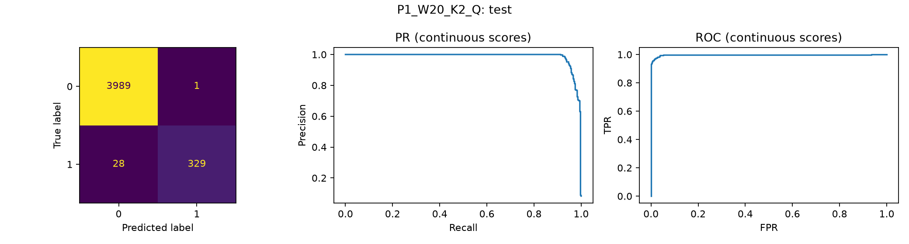
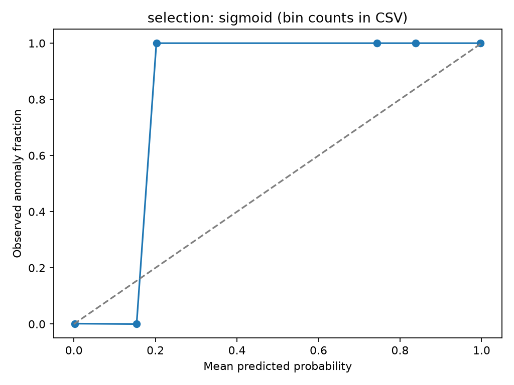
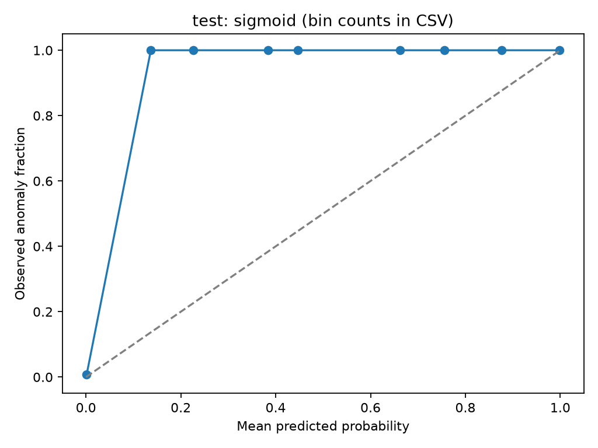

선정 PCA: P1_W20_K2_Q. 정상 보정 자료의 목표 FPR 1% 임계값을 적용한 뒤, 별도 모델 선택 자료에서 FPR≤1%를 만족하는 후보 중 Recall·F1·AP·실행시간 순으로 선택했다. 선택 상태: FPR target met in selection. 후처리 없는 전체 관측 행 결과를 주 결과로 사용한다. 최종 평가를 본 뒤 변경하지 않았다.
실제 이상 357개 중 329개 탐지, 28개 미탐. 정상 3990개 중 1개 오경보. 정상 1,000개 관측당 오경보 0.25개. Recall 92.16%, Precision 99.70%, F1 0.9578, F2 0.9357, FPR 0.03%, AP 0.9871.
개발용 선택에서 Recall 97.30%·FPR 0.40%였고, 최종 평가에서 FPR 목표는 충족했다. FPR 1%는 프로젝트 가정이며 대회 공식 기준 또는 현장 보장이 아니다.
| role | key | target_fpr | N | positive_rate | TP | FN | FP | TN | Recall | Precision | F1 | F2 | FPR | FNR | AP | PR_AUC_trapezoid | ROC_AUC | Accuracy | normal | anomaly |
|---|---|---|---|---|---|---|---|---|---|---|---|---|---|---|---|---|---|---|---|---|
| primary | P1_W20_K2_Q | 0.01 | 4347 | 0.082126 | 329 | 28 | 1 | 3989 | 0.92157 | 0.99697 | 0.95779 | 0.93572 | 0.00025063 | 0.078431 | 0.9871 | 0.98709 | 0.9962 | 0.99333 | 3990 | 357 |
| alternative | P1_W20_K2_Q | 0.005 | 4347 | 0.082126 | 325 | 32 | 0 | 3990 | 0.91036 | 1 | 0.95308 | 0.92698 | 0 | 0.089636 | 0.9871 | 0.98709 | 0.9962 | 0.99264 | 3990 | 357 |
| if_primary | I1_W5_ensemble | 0.01 | 4347 | 0.082126 | 173 | 184 | 3 | 3987 | 0.48459 | 0.98295 | 0.64916 | 0.53928 | 0.00075188 | 0.51541 | 0.92202 | 0.92194 | 0.98564 | 0.95698 | 3990 | 357 |
동일 분할·전체 관측·정상 보정 1% 기준에서 개발용으로 고른 IF I1_W5_ensemble 대비 PCA Recall 차이는 +43.70%p, FPR 차이는 -0.05%p, F1 차이는 +0.3086다. IF 대표는 42·43·44의 사전 고정 평균 점수이며 최종 최고 seed를 고르지 않았다.
버스트 고려 효과의 기본 비교는 같은 10행·2성분·결합 점수이며, 두 모델 모두 예측 가능한 동일 마지막 행에서 계산했다. 최적 설정끼리의 비교와 분리한다.
| unaware | aware | normal | anomaly | unaware_Recall | aware_Recall | delta_Recall | unaware_FPR | aware_FPR | delta_FPR | unaware_F1 | aware_F1 |
|---|---|---|---|---|---|---|---|---|---|---|---|
| P1_W10_K2_QT | P2_W10_K2_QT | 2961 | 246 | 0.85366 | 0.86179 | 0.0081301 | 0.0033772 | 0.0033772 | 0 | 0.90129 | 0.90598 |
선정 PCA의 동일 분해 설정에서 Q/T²/결합 점수를 공통 행(정상 1988, 이상 153)으로 비교했다. Q 대비 결합 점수는 이상 0개를 추가 탐지하고 2개를 잃었으며, 정상 14개에 추가 오경보를 내고 기존 오경보 1개를 제거했다. 결합 점수 자체의 임계값을 다시 보정하므로 단순 OR과 다르다.
후처리는 개발용에서 none로 고정했다. 아래 세 정책은 사전 지정한 비교이며 최종 점수로 정책을 재선택하지 않았다.
| policy | Recall | Precision | F1 | F2 | FPR | FN | FP | new_FN_vs_none | additional_TP_vs_none | anomaly_bursts | missed_anomaly_bursts | median_first_alarm_seconds | N | normal | anomaly | positive_rate |
|---|---|---|---|---|---|---|---|---|---|---|---|---|---|---|---|---|
| none | 0.92157 | 0.99697 | 0.95779 | 0.93572 | 0.00025063 | 28 | 1 | 0 | 0 | 13 | 0 | 0 | 4347 | 3990 | 357 | 0.082126 |
| consecutive2 | 0.87115 | 1 | 0.93114 | 0.89419 | 0 | 46 | 0 | 18 | 0 | 13 | 0 | 0.1 | 4347 | 3990 | 357 | 0.082126 |
| two_of_three | 0.88515 | 1 | 0.93908 | 0.90596 | 0 | 41 | 0 | 16 | 3 | 13 | 0 | 0.1 | 4347 | 3990 | 357 | 0.082126 |
고장 시작·정비 시각·정상→이상 전환 이력이 없어 고장 전 예측 시간과 실제 고장 탐지 지연을 검증할 수 없다. 계산한 시간은 각 관측 버스트 시작부터 첫 경보까지 실제 TimeStamp 차이다. 미경보 버스트도 분모에 남겼다.
첫 번째 실험의 원본 해시·분할·특징·학습 내부 경계는 동일하다. 자체 PCA/IF 비교는 같은 CPU 실행과 같은 점수 정규화 정책으로 완료했다. 첫 번째 프로젝트는 운영 점수를 정상 z 단위로 변환하고 이 실험은 95백분위수 배수를 쓰므로, 첫 번째 프로젝트의 전체 운영 결과와 완전히 동일한 방법 비교라고 주장하지 않는다. LSTM은 재학습하지 않았고 이 보고서에 미확인 LSTM 점수를 넣지 않았다.
결과 위치: /home/lim/hydraulic_ai_alt/runs/pca_20261003_cpu. 재실행: cd /home/lim/hydraulic_ai_alt && bash scripts/reproduce.sh. 새 결과 폴더를 생성하며 원본 CSV·첫 번째 프로젝트·기존 결과를 덮어쓰지 않는다.

| file | sha256 | original_rows | clean_rows | removed | missing | numeric_failures | timestamp_failures | date | label_counts | gaps_over_05 | gap_max | gap_median | burst_count |
|---|---|---|---|---|---|---|---|---|---|---|---|---|---|
| press_data_normal.csv | f2d61cb3b3108f49a3305d2966b3a31f26942ac8af8ffc9eb531b432b945b0a7 | 20000 | 19999 | 1 | 0 | 0 | 0 | [2022-07-12] | {'0': 20000} | 598 | 16.643 | 0.1 | 599 |
| outlier_data.csv | 9fad8c238e63dba3257d8be32a32362548955c772171a95c0d2af61b0435ed2e | 600 | 600 | 0 | 0 | 0 | 0 | [2022-07-17] | {'1': 600} | 20 | 8.572 | 0.1 | 21 |
추가 중복은 TimeStamp·센서 3개·Equipment_state가 모두 같은 행만 제거하고 최초 행을 남겼다. 원본 파일명·1부터 시작하는 데이터 행 번호·CSV 줄 번호를 clean_rows.csv와 중복 내역에 보존했다. 값이 크다는 이유로 삭제·클리핑하지 않았다. 첫 열 번호·라벨·날짜·파일명·행 번호·burst_id는 모델 입력에서 제외했다. 전체 자료의 행 수·범위·간격 등 요약은 실험 이전에 이미 확인했다.
| 변수 | 용도 | 단위/대응 |
|---|---|---|
| AI0_Vibration | 모델 입력 | 미확인; 진동 AI0/AI1의 상부·하부 대응 지정하지 않음 |
| AI1_Vibration | 모델 입력 | 미확인; 진동 AI0/AI1의 상부·하부 대응 지정하지 않음 |
| AI2_Current | 모델 입력 | 미확인 |
| TimeStamp | 분할·버스트·추적·실제 경과시간 | 기록 시각; 시간대 미확인 |
| Equipment_state | 평가·개발 선택·sigmoid 보정 라벨 | 0 정상, 1 이상; 고장 시작 시각 아님 |
정상은 2022-07-12, 이상은 2022-07-17 기록이다. 날짜와 라벨이 분리되어 날짜별 부하·운전조건·취득조건 차이가 성능에 영향을 줄 수 있다. 독립 고장 사건 수는 알 수 없다. 압력·품질·비가동·정비 이력과 실제 운전조건이 없어 이들을 직접 예측하거나 감소시켰다는 주장을 하지 않는다.
| label | split | rows | bursts | start | end |
|---|---|---|---|---|---|
| 0 | train | 12012 | 360 | 2022-07-12 00:00:00.019 | 2022-07-12 00:45:07.256 |
| 0 | calibration | 2011 | 63 | 2022-07-12 00:45:10.440 | 2022-07-12 00:53:17.956 |
| 0 | selection | 1986 | 58 | 2022-07-12 00:53:19.759 | 2022-07-12 01:01:01.732 |
| 0 | test | 3990 | 118 | 2022-07-12 01:01:04.524 | 2022-07-12 01:16:55.828 |
| 1 | calibration | 132 | 4 | 2022-07-17 10:51:07.943 | 2022-07-17 10:51:34.734 |
| 1 | selection | 111 | 4 | 2022-07-17 10:51:39.999 | 2022-07-17 10:52:08.307 |
| 1 | test | 357 | 13 | 2022-07-17 10:52:12.567 | 2022-07-17 10:53:53.540 |
윈도우 생성 전에 시간순·전체 버스트 단위로 고정한 행 목록을 복사했다. 학습은 정상 12,012행만 사용하며 첫 번째 IF와 맞추기 위해 train_role 내부 경계도 넘지 않는다. 각 파일·학습/보정/선택/최종 경계 사이에 윈도우가 겹치지 않는다. 보정용 이상 132행은 sigmoid 단계, 모델 선택용 이상 111행은 구성 선택과 분석에 사용했다. 따라서 PCA/IF fit은 비지도이지만 전체 절차는 이상 라벨을 사용한 개발·보정을 포함한다.
| gap | bursts | same_as_05 |
|---|---|---|
| 0.2 | 360 | True |
| 0.5 | 360 | True |
| 1 | 360 | True |
정상 학습에서 0.2·0.5·1.0초 기준의 버스트 경계가 모두 같아 중복 학습 실험을 생략했다. 버스트는 거의 0.1초 간격의 관측 구간이며 기계 사이클을 의미하지 않는다. 큰 공백은 보간하지 않았다. FFT는 사용하지 않았고, 10Hz 정보만으로 앨리어싱을 확정하거나 PCA가 이를 제거한다고 설명하지 않는다.
| 검사 | 결과 |
|---|---|
| no_test_score_files | True |
| unique_rows | True |
| whole_burst_split | True |
| train_only_normal | True |
| scalers_fit_exact_normal_training | True |
| checked_models | 99 |
| causal_train_windows | True |
| no_all_rank_Q | True |
| sensor_only_feature_allowlist | True |
| if_score_direction_verified | True |
| future_perturbation_invariance | True |
| all_IF_seeds_visible | True |
| same_row_denominators | True |
| test_not_seen_at_lock | True |
| fallback_shared | True |
| common_rows_frozen_before_scores | True |
최종 점수 계산은 selection_lock.json 존재와 모델·분할·프로토콜 해시 검사를 통과해야 한다. final_evaluation_started.json과 최종 완료 기록을 남겼다. 원래 비교 프로젝트의 최종 결과·예측·오류를 PCA 선택 과정에서 읽지 않았다.
P0: 센서 3개 한 행. P1: 버스트를 무시한 과거 5/10/20행 통계. P2: 버스트마다 초기화한 같은 통계. I0/I1/I2는 동일 입력의 IF다. 각 센서의 평균·표준편차(ddof=0)·RMS·최솟값·최댓값 15개를 통계 종류 우선 순서로 만든다. 현재 행까지만 포함하며 중앙 정렬·미래값을 사용하지 않는다. 이동통계는 과거를 요약하지만 윈도우 안의 전체 순서를 학습하지 않는다.
StandardScaler는 정상 학습 행/윈도우만 fit한다. PCA는 full SVD·whiten=False, P0 성분 1/2, P1/P2 성분 2/3/5/8이다. Q=Σ(z−ẑ)², T²=Σ(tⱼ²/λⱼ), 결합=max(Q/cQ,T²/cT). cQ·cT는 정상 보정 점수의 95백분위수다. 결합 점수는 별도 임계값을 보정한다. 점수와 배수는 고장 확률이 아니다.
상수 기준: 정상 학습 표준편차≤1e−12×max(1,|평균|). 고유값 허용오차=max(1e−12,λmax×1e−10). 유효 rank보다 적은 성분일 때만 Q를 허용하고 작은 고유값을 나누지 않는다. 참조값≤1e−12 후보는 제외한다. 기본 후보의 제거 특징·유효 rank·고유값·누적 설명 분산은 각 fit 로그에 있다.
| model | features | removed | rank | k | cumulative_variance | training_windows | fit_seconds |
|---|---|---|---|---|---|---|---|
| P0_W1_K1 | 3 | 3 | 1 | 0.45824 | 12012 | 0.0097852 | |
| P0_W1_K2 | 3 | 3 | 2 | 0.79155 | 12012 | 0.0061447 | |
| P1_W10_K2 | 15 | 15 | 2 | 0.62285 | 11994 | 0.054471 | |
| P1_W10_K3 | 15 | 15 | 3 | 0.74638 | 11994 | 0.07882 | |
| P1_W10_K5 | 15 | 15 | 5 | 0.9126 | 11994 | 0.080031 | |
| P1_W10_K8 | 15 | 15 | 8 | 0.977 | 11994 | 0.079546 | |
| P1_W20_K2 | 15 | 15 | 2 | 0.70163 | 11974 | 0.08692 | |
| P1_W20_K3 | 15 | 15 | 3 | 0.80755 | 11974 | 0.10108 | |
| P1_W20_K5 | 15 | 15 | 5 | 0.92161 | 11974 | 0.10187 | |
| P1_W20_K8 | 15 | 15 | 8 | 0.97058 | 11974 | 0.20126 | |
| P1_W5_K2 | 15 | 15 | 2 | 0.55714 | 12004 | 0.043971 | |
| P1_W5_K3 | 15 | 15 | 3 | 0.69484 | 12004 | 0.059275 | |
| P1_W5_K5 | 15 | 15 | 5 | 0.89618 | 12004 | 0.057823 | |
| P1_W5_K8 | 15 | 15 | 8 | 0.98236 | 12004 | 0.057627 | |
| P2_W10_K2 | 15 | 15 | 2 | 0.65831 | 8948 | 0.042236 | |
| P2_W10_K3 | 15 | 15 | 3 | 0.78135 | 8948 | 0.060474 | |
| P2_W10_K5 | 15 | 15 | 5 | 0.93077 | 8948 | 0.062128 | |
| P2_W10_K8 | 15 | 15 | 8 | 0.98407 | 8948 | 0.06082 | |
| P2_W20_K2 | 15 | 15 | 2 | 0.75562 | 6021 | 0.047213 | |
| P2_W20_K3 | 15 | 15 | 3 | 0.85307 | 6021 | 0.063443 | |
| P2_W20_K5 | 15 | 15 | 5 | 0.95495 | 6021 | 0.063441 | |
| P2_W20_K8 | 15 | 15 | 8 | 0.99065 | 6021 | 0.081123 | |
| P2_W5_K2 | 15 | 15 | 2 | 0.57275 | 10605 | 0.15577 | |
| P2_W5_K3 | 15 | 15 | 3 | 0.71009 | 10605 | 0.087283 | |
| P2_W5_K5 | 15 | 15 | 5 | 0.90994 | 10605 | 0.087979 | |
| P2_W5_K8 | 15 | 15 | 8 | 0.98394 | 10605 | 0.24558 |
IF는 300 trees·max_samples=256·contamination=auto·n_jobs=2·seed 42/43/44, −score_samples를 사용했다. 모든 반복을 공개한다. full SVD PCA는 같은 입력에서 결정적이므로 seed만 바꾼 가짜 반복을 하지 않았다. 표본 수 보조 실험의 PCA 반복은 실제 서로 다른 정상 학습 표본을 추출한 것이다.
임계값은 정상 보정 자료에서 목표 FPR 0.5/1/2/5%에 대응하는 np.quantile(method="higher")로 구한다. score>threshold만 이상이고 동점은 정상이다. 유한 표본·동점 때문에 목표 비율과 정확히 같지 않을 수 있다. 이론적 관리한계·정규성·관측 독립성을 가정하지 않았으며 경험적 분포의 현장 보장도 주장하지 않는다.
예측 부족 행은 모든 PCA 이동통계 후보에 같은 P0 P0_W1_K2_Q를 적용했다. IF는 같은 seed의 I0로 보완한 후 3-seed 점수를 평균했다. 각 모델 원점수를 그 모델의 정상 보정 95백분위수로 나누어 연결하고, 연결한 전체 정상 보정 점수로 임계값을 다시 정했다. 이 변환은 확률 보정이 아니다.
| feature | label | total | available | excluded | coverage | crossing_windows | elapsed_max |
|---|---|---|---|---|---|---|---|
| R | 0 | 3990 | 3990 | 0 | 1 | 0 | 0 |
| R | 1 | 357 | 357 | 0 | 1 | 0 | 0 |
| U5 | 0 | 3990 | 3986 | 4 | 0.999 | 464 | 16.943 |
| U5 | 1 | 357 | 353 | 4 | 0.9888 | 48 | 8.872 |
| B5 | 0 | 3990 | 3522 | 468 | 0.88271 | 0 | 0.4 |
| B5 | 1 | 357 | 305 | 52 | 0.85434 | 0 | 0.4 |
| U10 | 0 | 3990 | 3981 | 9 | 0.99774 | 1020 | 23.055 |
| U10 | 1 | 357 | 348 | 9 | 0.97479 | 102 | 16.854 |
| B10 | 0 | 3990 | 2961 | 1029 | 0.74211 | 0 | 0.9 |
| B10 | 1 | 357 | 246 | 111 | 0.68908 | 0 | 0.9 |
| U20 | 0 | 3990 | 3971 | 19 | 0.99524 | 1983 | 24.055 |
| U20 | 1 | 357 | 338 | 19 | 0.94678 | 185 | 23.805 |
| B20 | 0 | 3990 | 1988 | 2002 | 0.49825 | 0 | 1.9 |
| B20 | 1 | 357 | 153 | 204 | 0.42857 | 0 | 1.9 |
모든 윈도우 길이 후보의 공통 마지막 행은 점수 계산 전에 고정했다. 이 집합은 어려운 구간 시작과 짧은 버스트를 제외하므로 전체 관측 평가를 대체하지 않는다. native 표의 서로 다른 행 수를 직접 순위 비교하지 않는다. rows_*.csv는 제외 이유·윈도우 시작 행·실제 경과시간, coverage.csv는 구간 시작/짧은 버스트의 분모까지 제공한다.
| scope | key | target_fpr | N | positive_rate | TP | FN | FP | TN | Recall | Precision | F1 | F2 | FPR | FNR | AP | PR_AUC_trapezoid | ROC_AUC | Accuracy | normal | anomaly |
|---|---|---|---|---|---|---|---|---|---|---|---|---|---|---|---|---|---|---|---|---|
| common | P1_W20_K2_Q | 0.01 | 2141 | 0.071462 | 150 | 3 | 1 | 1987 | 0.98039 | 0.99338 | 0.98684 | 0.98296 | 0.00050302 | 0.019608 | 0.9995 | 0.9995 | 0.99996 | 0.99813 | 1988 | 153 |
| operational | P1_W20_K2_Q | 0.01 | 4347 | 0.082126 | 329 | 28 | 1 | 3989 | 0.92157 | 0.99697 | 0.95779 | 0.93572 | 0.00025063 | 0.078431 | 0.9871 | 0.98709 | 0.9962 | 0.99333 | 3990 | 357 |
| common | I1_W5_ensemble | 0.01 | 2141 | 0.071462 | 73 | 80 | 1 | 1987 | 0.47712 | 0.98649 | 0.64317 | 0.53207 | 0.00050302 | 0.52288 | 0.96071 | 0.96057 | 0.99678 | 0.96217 | 1988 | 153 |
| operational | I1_W5_ensemble | 0.01 | 4347 | 0.082126 | 173 | 184 | 3 | 3987 | 0.48459 | 0.98295 | 0.64916 | 0.53928 | 0.00075188 | 0.51541 | 0.92202 | 0.92194 | 0.98564 | 0.95698 | 3990 | 357 |
개발용에서 각 계열 최적 설정을 따로 고른 비교:
| key | target_fpr | N | positive_rate | TP | FN | FP | TN | Recall | Precision | F1 | F2 | FPR | FNR | AP | PR_AUC_trapezoid | ROC_AUC | Accuracy | normal | anomaly |
|---|---|---|---|---|---|---|---|---|---|---|---|---|---|---|---|---|---|---|---|
| P0_W1_K2_Q | 0.01 | 4347 | 0.082126 | 129 | 228 | 11 | 3979 | 0.36134 | 0.92143 | 0.51911 | 0.41135 | 0.0027569 | 0.63866 | 0.62816 | 0.62792 | 0.82662 | 0.94502 | 3990 | 357 |
| P1_W20_K2_Q | 0.01 | 4347 | 0.082126 | 329 | 28 | 1 | 3989 | 0.92157 | 0.99697 | 0.95779 | 0.93572 | 0.00025063 | 0.078431 | 0.9871 | 0.98709 | 0.9962 | 0.99333 | 3990 | 357 |
| P2_W10_K8_QT | 0.01 | 4347 | 0.082126 | 274 | 83 | 9 | 3981 | 0.76751 | 0.9682 | 0.85625 | 0.8007 | 0.0022556 | 0.23249 | 0.8537 | 0.85365 | 0.89468 | 0.97884 | 3990 | 357 |
| I0_W1_ensemble | 0.01 | 4347 | 0.082126 | 89 | 268 | 5 | 3985 | 0.2493 | 0.94681 | 0.39468 | 0.29238 | 0.0012531 | 0.7507 | 0.59761 | 0.59724 | 0.88961 | 0.9372 | 3990 | 357 |
| I1_W5_ensemble | 0.01 | 4347 | 0.082126 | 173 | 184 | 3 | 3987 | 0.48459 | 0.98295 | 0.64916 | 0.53928 | 0.00075188 | 0.51541 | 0.92202 | 0.92194 | 0.98564 | 0.95698 | 3990 | 357 |
| I2_W5_ensemble | 0.01 | 4347 | 0.082126 | 167 | 190 | 6 | 3984 | 0.46779 | 0.96532 | 0.63019 | 0.52155 | 0.0015038 | 0.53221 | 0.87805 | 0.87795 | 0.94984 | 0.95491 | 3990 | 357 |
동일 성분·동일 점수·동일 길이의 전체 버스트 비교: burst_pairs_test.csv. 기본 W10 K2의 세 점수를 아래에 제시한다.
| unaware | aware | normal | anomaly | unaware_Recall | aware_Recall | delta_Recall | unaware_FPR | aware_FPR | delta_FPR | unaware_F1 | aware_F1 | delta_F1 |
|---|---|---|---|---|---|---|---|---|---|---|---|---|
| P1_W10_K2_Q | P2_W10_K2_Q | 2961 | 246 | 0.91057 | 0.92683 | 0.01626 | 0.0020263 | 0.0023641 | 0.00033772 | 0.94118 | 0.94802 | 0.0068485 |
| P1_W10_K2_T2 | P2_W10_K2_T2 | 2961 | 246 | 0.45122 | 0.44715 | -0.004065 | 0.0033772 | 0.0023641 | -0.0010132 | 0.6049 | 0.60606 | 0.001156 |
| P1_W10_K2_QT | P2_W10_K2_QT | 2961 | 246 | 0.85366 | 0.86179 | 0.0081301 | 0.0033772 | 0.0033772 | 0 | 0.90129 | 0.90598 | 0.0046954 |
개발용 동일 행에서 버스트 모델의 Recall 또는 F1 개선이 있었던 조건에만 정상 학습 개수를 맞추는 보조 실험 74개 결과를 남겼다. 버스트 미고려 학습 마지막 행을 seed 42/43/44로 무작위 추출하고 같은 검증 행·성분·점수로 비교했다. 이는 표본 수 영향을 점검하며 독립 고장 불확실성을 추정하지 않는다.
| unaware | aware | training_count | Recall_mean | Recall_std | F1_mean | FPR_mean |
|---|---|---|---|---|---|---|
| I1_W10_S42 | I2_W10_S42 | 8948 | 0.79012 | NaN | 0.7619 | 0.015583 |
| I1_W10_S43 | I2_W10_S43 | 8948 | 0.81481 | NaN | 0.74576 | 0.020325 |
| I1_W10_S44 | I2_W10_S44 | 8948 | 0.81481 | NaN | 0.76744 | 0.016938 |
| I1_W20_S42 | I2_W20_S42 | 6021 | 1 | NaN | 0.85246 | 0.018274 |
| I1_W20_S43 | I2_W20_S43 | 6021 | 1 | NaN | 0.8062 | 0.025381 |
| I1_W20_S44 | I2_W20_S44 | 6021 | 1 | NaN | 0.8125 | 0.024365 |
| I1_W5_S42 | I2_W5_S42 | 10605 | 0.69792 | NaN | 0.75281 | 0.0085519 |
| I1_W5_S43 | I2_W5_S43 | 10605 | 0.71875 | NaN | 0.74194 | 0.011973 |
| P1_W10_K2_Q | P2_W10_K2_Q | 8948 | 0.90947 | 0.0071278 | 0.85493 | 0.011969 |
| P1_W10_K2_QT | P2_W10_K2_QT | 8948 | 0.8642 | 0 | 0.7985 | 0.016486 |
| P1_W10_K2_T2 | P2_W10_K2_T2 | 8948 | 0.69136 | 0 | 0.7134 | 0.01355 |
| P1_W10_K3_Q | P2_W10_K3_Q | 8948 | 0.95885 | 0.0071278 | 0.97898 | 0 |
| P1_W10_K3_QT | P2_W10_K3_QT | 8948 | 0.90947 | 0.0071278 | 0.82309 | 0.016486 |
| P1_W10_K5_Q | P2_W10_K5_Q | 8948 | 0.94239 | 0.0071278 | 0.9642 | 0.00067751 |
| P1_W10_K5_T2 | P2_W10_K5_T2 | 8948 | 0.93827 | 0 | 0.85238 | 0.014453 |
| P1_W10_K8_Q | P2_W10_K8_Q | 8948 | 0.94239 | 0.0071278 | 0.93469 | 0.004065 |
| P1_W10_K8_QT | P2_W10_K8_QT | 8948 | 0.96296 | 0 | 0.95122 | 0.0033875 |
| P1_W10_K8_T2 | P2_W10_K8_T2 | 8948 | 0.98354 | 0.014256 | 0.93356 | 0.0067751 |
| P1_W20_K2_QT | P2_W20_K2_QT | 6021 | 1 | 0 | 0.78195 | 0.029442 |
| P1_W20_K3_T2 | P2_W20_K3_T2 | 6021 | 0.96154 | 0 | 0.77724 | 0.027073 |
| P1_W5_K2_Q | P2_W5_K2_Q | 10605 | 0.85417 | 0 | 0.88015 | 0.004751 |
| P1_W5_K2_QT | P2_W5_K2_QT | 10605 | 0.85417 | 0 | 0.88172 | 0.004561 |
| P1_W5_K2_T2 | P2_W5_K2_T2 | 10605 | 0.47917 | 0 | 0.54439 | 0.015393 |
| P1_W5_K3_Q | P2_W5_K3_Q | 10605 | 0.85417 | 0 | 0.89617 | 0.0028506 |
| P1_W5_K3_QT | P2_W5_K3_QT | 10605 | 0.85417 | 0 | 0.88172 | 0.004561 |
| P1_W5_K5_Q | P2_W5_K5_Q | 10605 | 0.88542 | 0 | 0.92391 | 0.0017104 |
| P1_W5_K5_QT | P2_W5_K5_QT | 10605 | 0.88542 | 0 | 0.92391 | 0.0017104 |
| P1_W5_K8_Q | P2_W5_K8_Q | 10605 | 0.875 | 0 | 0.87958 | 0.0062714 |
| P1_W5_K8_QT | P2_W5_K8_QT | 10605 | 0.875 | 0 | 0.90162 | 0.0036108 |
| P1_W5_K8_T2 | P2_W5_K8_T2 | 10605 | 0.875 | 0 | 0.92818 | 0.00057013 |
기본 W10·2성분·결합 점수의 개발용 표본 수 보조 결과: 미고려 모델의 표본 수를 고려 모델과 맞춘 세 반복 Recall 평균 86.42%, F1 평균 0.7985; 고려 모델 Recall 90.12%, F1 0.8295. 이 조건의 개선을 단순히 학습 개수 차이만으로 설명하기는 어렵지만, 한 날짜의 반복이므로 일반적 인과 효과로 확정하지 않는다.
같은 W20 이동통계와 같은 공통 평가 행으로 PCA와 IF를 비교한 표도 별도로 제시한다. 전체 운영 비교는 PCA의 P0 보완과 IF의 I0 보완이 다르므로 차이를 순수 알고리즘 효과로 단정하지 않는다.
| scope | key | target_fpr | N | positive_rate | TP | FN | FP | TN | Recall | Precision | F1 | F2 | FPR | FNR | AP | PR_AUC_trapezoid | ROC_AUC | Accuracy | normal | anomaly |
|---|---|---|---|---|---|---|---|---|---|---|---|---|---|---|---|---|---|---|---|---|
| common | P1_W20_K2_Q | 0.01 | 2141 | 0.071462 | 150 | 3 | 1 | 1987 | 0.98039 | 0.99338 | 0.98684 | 0.98296 | 0.00050302 | 0.019608 | 0.9995 | 0.9995 | 0.99996 | 0.99813 | 1988 | 153 |
| operational | P1_W20_K2_Q | 0.01 | 4347 | 0.082126 | 329 | 28 | 1 | 3989 | 0.92157 | 0.99697 | 0.95779 | 0.93572 | 0.00025063 | 0.078431 | 0.9871 | 0.98709 | 0.9962 | 0.99333 | 3990 | 357 |
| common | I1_W20_ensemble | 0.01 | 2141 | 0.071462 | 143 | 10 | 3 | 1985 | 0.93464 | 0.97945 | 0.95652 | 0.94327 | 0.0015091 | 0.065359 | 0.99734 | 0.99733 | 0.99979 | 0.99393 | 1988 | 153 |
| operational | I1_W20_ensemble | 0.01 | 4347 | 0.082126 | 320 | 37 | 6 | 3984 | 0.89636 | 0.9816 | 0.93704 | 0.9122 | 0.0015038 | 0.10364 | 0.95467 | 0.95466 | 0.96614 | 0.99011 | 3990 | 357 |
| key | target_fpr | N | positive_rate | TP | FN | FP | TN | Recall | Precision | F1 | F2 | FPR | FNR | AP | PR_AUC_trapezoid | ROC_AUC | Accuracy | normal | anomaly |
|---|---|---|---|---|---|---|---|---|---|---|---|---|---|---|---|---|---|---|---|
| P1_W20_K2_Q | 0.005 | 4347 | 0.082126 | 325 | 32 | 0 | 3990 | 0.91036 | 1 | 0.95308 | 0.92698 | 0 | 0.089636 | 0.9871 | 0.98709 | 0.9962 | 0.99264 | 3990 | 357 |
| P1_W20_K2_Q | 0.01 | 4347 | 0.082126 | 329 | 28 | 1 | 3989 | 0.92157 | 0.99697 | 0.95779 | 0.93572 | 0.00025063 | 0.078431 | 0.9871 | 0.98709 | 0.9962 | 0.99333 | 3990 | 357 |
| P1_W20_K2_Q | 0.02 | 4347 | 0.082126 | 331 | 26 | 4 | 3986 | 0.92717 | 0.98806 | 0.95665 | 0.93874 | 0.0010025 | 0.072829 | 0.9871 | 0.98709 | 0.9962 | 0.9931 | 3990 | 357 |
| P1_W20_K2_Q | 0.05 | 4347 | 0.082126 | 336 | 21 | 17 | 3973 | 0.94118 | 0.95184 | 0.94648 | 0.94329 | 0.0042607 | 0.058824 | 0.9871 | 0.98709 | 0.9962 | 0.99126 | 3990 | 357 |
| I1_W5_ensemble | 0.005 | 4347 | 0.082126 | 151 | 206 | 0 | 3990 | 0.42297 | 1 | 0.59449 | 0.47815 | 0 | 0.57703 | 0.92202 | 0.92194 | 0.98564 | 0.95261 | 3990 | 357 |
| I1_W5_ensemble | 0.01 | 4347 | 0.082126 | 173 | 184 | 3 | 3987 | 0.48459 | 0.98295 | 0.64916 | 0.53928 | 0.00075188 | 0.51541 | 0.92202 | 0.92194 | 0.98564 | 0.95698 | 3990 | 357 |
| I1_W5_ensemble | 0.02 | 4347 | 0.082126 | 209 | 148 | 6 | 3984 | 0.58543 | 0.97209 | 0.73077 | 0.63603 | 0.0015038 | 0.41457 | 0.92202 | 0.92194 | 0.98564 | 0.96457 | 3990 | 357 |
| I1_W5_ensemble | 0.05 | 4347 | 0.082126 | 271 | 86 | 19 | 3971 | 0.7591 | 0.93448 | 0.83771 | 0.78871 | 0.0047619 | 0.2409 | 0.92202 | 0.92194 | 0.98564 | 0.97585 | 3990 | 357 |
F1 대안은 개발용에서 네 목표 임계값 후보를 포함해 고른 결과다. 주 기준과 달리 FPR≤1% 제약을 우선하지 않는다.
최종 F1 대안은 P1_W20_K2_Q·목표 0.50%. 주 모델 대비 Recall -1.12%p, Precision +0.30%p, FPR -0.03%p다.
| key | target_fpr | N | positive_rate | TP | FN | FP | TN | Recall | Precision | F1 | F2 | FPR | FNR | AP | PR_AUC_trapezoid | ROC_AUC | Accuracy | normal | anomaly |
|---|---|---|---|---|---|---|---|---|---|---|---|---|---|---|---|---|---|---|---|
| I1_W5_S42 | 0.01 | 4347 | 0.082126 | 176 | 181 | 3 | 3987 | 0.493 | 0.98324 | 0.65672 | 0.5476 | 0.00075188 | 0.507 | 0.91727 | 0.91718 | 0.98508 | 0.95767 | 3990 | 357 |
| I1_W5_S43 | 0.01 | 4347 | 0.082126 | 168 | 189 | 4 | 3986 | 0.47059 | 0.97674 | 0.63516 | 0.525 | 0.0010025 | 0.52941 | 0.91444 | 0.91435 | 0.98368 | 0.9556 | 3990 | 357 |
| I1_W5_S44 | 0.01 | 4347 | 0.082126 | 174 | 183 | 1 | 3989 | 0.48739 | 0.99429 | 0.65414 | 0.54273 | 0.00025063 | 0.51261 | 0.92935 | 0.92928 | 0.98671 | 0.95767 | 3990 | 357 |
| I1_W5_ensemble | 0.01 | 4347 | 0.082126 | 173 | 184 | 3 | 3987 | 0.48459 | 0.98295 | 0.64916 | 0.53928 | 0.00075188 | 0.51541 | 0.92202 | 0.92194 | 0.98564 | 0.95698 | 3990 | 357 |
| seed statistic (sample std) | Recall | Precision | F1 | F2 | FPR | AP |
|---|---|---|---|---|---|---|
| mean | 0.48366 | 0.98476 | 0.64867 | 0.53845 | 0.00066834 | 0.92035 |
| std | 0.011662 | 0.0088685 | 0.011771 | 0.011896 | 0.00038284 | 0.0079205 |
IF 모든 구성·seed의 개별 결과는 metrics_test.csv, 평균·표본 표준편차는 if_seed_summary_test.csv에 저장했다. seed 변동은 동일 날짜 자료의 불확실성 또는 독립 고장 사건의 신뢰구간이 아니다. 행을 독립 표본으로 취급한 신뢰구간은 만들지 않았다.
| scope | prediction | TP | FN | FP | TN | N | positive_rate | Recall | Precision | F1 | F2 | FPR | FNR | AP | PR_AUC_trapezoid | ROC_AUC | Accuracy | FP_per_1000 | normal | anomaly |
|---|---|---|---|---|---|---|---|---|---|---|---|---|---|---|---|---|---|---|---|---|
| operational | 0 | 0 | 357 | 0 | 3990 | 4347 | 0.082126 | 0 | 0 | 0 | 0 | 0 | 1 | 0.082126 | 0.54106 | 0.5 | 0.91787 | 0 | 3990 | 357 |
| operational | 1 | 357 | 0 | 3990 | 0 | 4347 | 0.082126 | 1 | 0.082126 | 0.15179 | 0.30909 | 1 | 0 | 0.082126 | 0.54106 | 0.5 | 0.082126 | 1000 | 3990 | 357 |
| common | 0 | 0 | 153 | 0 | 1988 | 2141 | 0.071462 | 0 | 0 | 0 | 0 | 0 | 1 | 0.071462 | 0.53573 | 0.5 | 0.92854 | 0 | 1988 | 153 |
| common | 1 | 153 | 0 | 1988 | 0 | 2141 | 0.071462 | 1 | 0.071462 | 0.13339 | 0.27788 | 1 | 0 | 0.071462 | 0.53573 | 0.5 | 0.071462 | 1000 | 1988 | 153 |
Precision 분모가 0이면 0, F1/F2가 정의되지 않으면 0이다. 특정 클래스가 없으면 해당 클래스 비율과 AP/PR-AUC/ROC-AUC는 결측으로 둔다. PR/ROC는 연속 점수로 계산한다. AP는 비보간 평균 정밀도이며 사다리꼴 PR-AUC를 따로 산출했다. 후처리 표의 AP/ROC는 원래 연속 점수 기준이다.
| base | scope | normal | anomaly | normal_Q_only | normal_T2_only | normal_QT_added_vs_Q | normal_QT_lost_vs_Q | normal_QT_added_vs_T2 | normal_QT_lost_vs_T2 | anomaly_Q_only | anomaly_T2_only | anomaly_QT_added_vs_Q | anomaly_QT_lost_vs_Q | anomaly_QT_added_vs_T2 | anomaly_QT_lost_vs_T2 |
|---|---|---|---|---|---|---|---|---|---|---|---|---|---|---|---|
| P1_W20_K2 | common | 1988 | 153 | 1 | 14 | 14 | 1 | 0 | 0 | 60 | 0 | 0 | 2 | 58 | 0 |
개발용 센서 조합/하나씩 제거 비교는 모두 W10 공통 행을 사용한다. 진동 2개·전류만·3개·각 단일/제거 조합의 원시 P0와 버스트 W10을 비교했다. rank1은 Q가 성립하지 않아 T²만 사용했으며 방법 차이를 표에 남겼다. 이 보조 실험은 최종 후보 선택에 포함하지 않았다.
| model | sensors | feature | k | rank | score | N | positive_rate | Recall | Precision | F1 | FPR | AP | normal | anomaly |
|---|---|---|---|---|---|---|---|---|---|---|---|---|---|---|
| Ablation_R_0 | AI0_Vibration | R | 1 | 1 | T2 | 1557 | 0.052023 | 0.44444 | 0.67925 | 0.53731 | 0.011518 | 0.51461 | 1476 | 81 |
| Ablation_B10_0 | AI0_Vibration | B10 | 2 | 5 | Q | 1557 | 0.052023 | 0.85185 | 0.81176 | 0.83133 | 0.01084 | 0.89891 | 1476 | 81 |
| Ablation_B10_0 | AI0_Vibration | B10 | 2 | 5 | T2 | 1557 | 0.052023 | 0.76543 | 0.70455 | 0.73373 | 0.017615 | 0.83814 | 1476 | 81 |
| Ablation_B10_0 | AI0_Vibration | B10 | 2 | 5 | QT | 1557 | 0.052023 | 0.85185 | 0.72632 | 0.78409 | 0.017615 | 0.87299 | 1476 | 81 |
| Ablation_R_1 | AI1_Vibration | R | 1 | 1 | T2 | 1557 | 0.052023 | 0.17284 | 0.5 | 0.25688 | 0.0094851 | 0.27383 | 1476 | 81 |
| Ablation_B10_1 | AI1_Vibration | B10 | 2 | 5 | Q | 1557 | 0.052023 | 0.87654 | 0.95946 | 0.91613 | 0.0020325 | 0.96617 | 1476 | 81 |
| Ablation_B10_1 | AI1_Vibration | B10 | 2 | 5 | T2 | 1557 | 0.052023 | 0.92593 | 0.82418 | 0.87209 | 0.01084 | 0.94452 | 1476 | 81 |
| Ablation_B10_1 | AI1_Vibration | B10 | 2 | 5 | QT | 1557 | 0.052023 | 0.98765 | 0.93023 | 0.95808 | 0.004065 | 0.99562 | 1476 | 81 |
| Ablation_R_2 | AI2_Current | R | 1 | 1 | T2 | 1557 | 0.052023 | 0.074074 | 0.375 | 0.12371 | 0.0067751 | 0.12558 | 1476 | 81 |
| Ablation_B10_2 | AI2_Current | B10 | 2 | 5 | Q | 1557 | 0.052023 | 0.44444 | 0.70588 | 0.54545 | 0.010163 | 0.65666 | 1476 | 81 |
| Ablation_B10_2 | AI2_Current | B10 | 2 | 5 | T2 | 1557 | 0.052023 | 0.34568 | 0.82353 | 0.48696 | 0.004065 | 0.45764 | 1476 | 81 |
| Ablation_B10_2 | AI2_Current | B10 | 2 | 5 | QT | 1557 | 0.052023 | 0.44444 | 0.70588 | 0.54545 | 0.010163 | 0.61546 | 1476 | 81 |
| Ablation_R_01 | AI0_Vibration+AI1_Vibration | R | 1 | 2 | Q | 1557 | 0.052023 | 0.54321 | 0.93617 | 0.6875 | 0.0020325 | 0.68362 | 1476 | 81 |
| Ablation_R_01 | AI0_Vibration+AI1_Vibration | R | 1 | 2 | T2 | 1557 | 0.052023 | 0.24691 | 0.46512 | 0.32258 | 0.015583 | 0.29408 | 1476 | 81 |
| Ablation_R_01 | AI0_Vibration+AI1_Vibration | R | 1 | 2 | QT | 1557 | 0.052023 | 0.54321 | 0.72131 | 0.61972 | 0.011518 | 0.64324 | 1476 | 81 |
| Ablation_B10_01 | AI0_Vibration+AI1_Vibration | B10 | 2 | 10 | Q | 1557 | 0.052023 | 0.95062 | 0.85556 | 0.90058 | 0.0088076 | 0.97684 | 1476 | 81 |
| Ablation_B10_01 | AI0_Vibration+AI1_Vibration | B10 | 2 | 10 | T2 | 1557 | 0.052023 | 0.50617 | 0.60294 | 0.55034 | 0.018293 | 0.63514 | 1476 | 81 |
| Ablation_B10_01 | AI0_Vibration+AI1_Vibration | B10 | 2 | 10 | QT | 1557 | 0.052023 | 0.93827 | 0.73786 | 0.82609 | 0.018293 | 0.9468 | 1476 | 81 |
| Ablation_R_02 | AI0_Vibration+AI2_Current | R | 1 | 2 | Q | 1557 | 0.052023 | 0.32099 | 0.59091 | 0.416 | 0.012195 | 0.41746 | 1476 | 81 |
| Ablation_R_02 | AI0_Vibration+AI2_Current | R | 1 | 2 | T2 | 1557 | 0.052023 | 0.33333 | 0.64286 | 0.43902 | 0.010163 | 0.44552 | 1476 | 81 |
| Ablation_R_02 | AI0_Vibration+AI2_Current | R | 1 | 2 | QT | 1557 | 0.052023 | 0.32099 | 0.63415 | 0.42623 | 0.010163 | 0.41992 | 1476 | 81 |
| Ablation_B10_02 | AI0_Vibration+AI2_Current | B10 | 2 | 10 | Q | 1557 | 0.052023 | 0.80247 | 0.625 | 0.7027 | 0.026423 | 0.83268 | 1476 | 81 |
| Ablation_B10_02 | AI0_Vibration+AI2_Current | B10 | 2 | 10 | T2 | 1557 | 0.052023 | 0.75309 | 0.85915 | 0.80263 | 0.0067751 | 0.81635 | 1476 | 81 |
| Ablation_B10_02 | AI0_Vibration+AI2_Current | B10 | 2 | 10 | QT | 1557 | 0.052023 | 0.85185 | 0.69697 | 0.76667 | 0.020325 | 0.87565 | 1476 | 81 |
| Ablation_R_12 | AI1_Vibration+AI2_Current | R | 1 | 2 | Q | 1557 | 0.052023 | 0.08642 | 0.28 | 0.13208 | 0.012195 | 0.19344 | 1476 | 81 |
| Ablation_R_12 | AI1_Vibration+AI2_Current | R | 1 | 2 | T2 | 1557 | 0.052023 | 0.061728 | 0.29412 | 0.10204 | 0.0081301 | 0.13791 | 1476 | 81 |
| Ablation_R_12 | AI1_Vibration+AI2_Current | R | 1 | 2 | QT | 1557 | 0.052023 | 0.1358 | 0.42308 | 0.20561 | 0.010163 | 0.21862 | 1476 | 81 |
| Ablation_B10_12 | AI1_Vibration+AI2_Current | B10 | 2 | 10 | Q | 1557 | 0.052023 | 1 | 0.89011 | 0.94186 | 0.0067751 | 0.99854 | 1476 | 81 |
| Ablation_B10_12 | AI1_Vibration+AI2_Current | B10 | 2 | 10 | T2 | 1557 | 0.052023 | 0.39506 | 0.72727 | 0.512 | 0.0081301 | 0.44201 | 1476 | 81 |
| Ablation_B10_12 | AI1_Vibration+AI2_Current | B10 | 2 | 10 | QT | 1557 | 0.052023 | 1 | 0.89011 | 0.94186 | 0.0067751 | 0.99854 | 1476 | 81 |
| Ablation_R_012 | AI0_Vibration+AI1_Vibration+AI2_Current | R | 2 | 3 | Q | 1557 | 0.052023 | 0.54321 | 0.93617 | 0.6875 | 0.0020325 | 0.68306 | 1476 | 81 |
| Ablation_R_012 | AI0_Vibration+AI1_Vibration+AI2_Current | R | 2 | 3 | T2 | 1557 | 0.052023 | 0.23457 | 0.46341 | 0.31148 | 0.014905 | 0.28364 | 1476 | 81 |
| Ablation_R_012 | AI0_Vibration+AI1_Vibration+AI2_Current | R | 2 | 3 | QT | 1557 | 0.052023 | 0.54321 | 0.74576 | 0.62857 | 0.010163 | 0.64029 | 1476 | 81 |
| Ablation_B10_012 | AI0_Vibration+AI1_Vibration+AI2_Current | B10 | 2 | 15 | Q | 1557 | 0.052023 | 0.95062 | 0.79381 | 0.86517 | 0.01355 | 0.97537 | 1476 | 81 |
| Ablation_B10_012 | AI0_Vibration+AI1_Vibration+AI2_Current | B10 | 2 | 15 | T2 | 1557 | 0.052023 | 0.67901 | 0.78571 | 0.72848 | 0.010163 | 0.74734 | 1476 | 81 |
| Ablation_B10_012 | AI0_Vibration+AI1_Vibration+AI2_Current | B10 | 2 | 15 | QT | 1557 | 0.052023 | 0.90123 | 0.76842 | 0.82955 | 0.014905 | 0.94924 | 1476 | 81 |
개발용 오류 조건:
| key | condition | total | normal | anomaly | FP | FN | FPR | FNR |
|---|---|---|---|---|---|---|---|---|
| P1_W20_K2_Q | all | 2097 | 1986 | 111 | 8 | 3 | 0.0040282 | 0.027027 |
| P1_W20_K2_Q | burst_start | 1060 | 1001 | 59 | 8 | 3 | 0.007992 | 0.050847 |
| P1_W20_K2_Q | after_start | 1037 | 985 | 52 | 0 | 0 | 0 | 0 |
| P1_W20_K2_Q | short_burst | 148 | 127 | 21 | 0 | 3 | 0 | 0.14286 |
| P1_W20_K2_Q | long_burst | 1949 | 1859 | 90 | 8 | 0 | 0.0043034 | 0 |
| P1_W20_K2_Q | fallback | 38 | 19 | 19 | 0 | 3 | 0 | 0.15789 |
| P1_W20_K2_Q | main_model | 2059 | 1967 | 92 | 8 | 0 | 0.0040671 | 0 |
| P1_W20_K2_Q | AI0_Vibration_magnitude_bin0 | 526 | 519 | 7 | 2 | 1 | 0.0038536 | 0.14286 |
| P1_W20_K2_Q | AI0_Vibration_magnitude_bin1 | 532 | 523 | 9 | 3 | 1 | 0.0057361 | 0.11111 |
| P1_W20_K2_Q | AI0_Vibration_magnitude_bin2 | 523 | 507 | 16 | 2 | 0 | 0.0039448 | 0 |
| P1_W20_K2_Q | AI0_Vibration_magnitude_bin3 | 516 | 437 | 79 | 1 | 1 | 0.0022883 | 0.012658 |
| P1_W20_K2_Q | AI1_Vibration_magnitude_bin0 | 559 | 553 | 6 | 3 | 0 | 0.005425 | 0 |
| P1_W20_K2_Q | AI1_Vibration_magnitude_bin1 | 555 | 545 | 10 | 2 | 0 | 0.0036697 | 0 |
| P1_W20_K2_Q | AI1_Vibration_magnitude_bin2 | 495 | 462 | 33 | 1 | 2 | 0.0021645 | 0.060606 |
| P1_W20_K2_Q | AI1_Vibration_magnitude_bin3 | 488 | 426 | 62 | 2 | 1 | 0.0046948 | 0.016129 |
| P1_W20_K2_Q | AI2_Current_magnitude_bin0 | 546 | 499 | 47 | 5 | 0 | 0.01002 | 0 |
| P1_W20_K2_Q | AI2_Current_magnitude_bin1 | 548 | 532 | 16 | 2 | 3 | 0.0037594 | 0.1875 |
| P1_W20_K2_Q | AI2_Current_magnitude_bin2 | 557 | 545 | 12 | 1 | 0 | 0.0018349 | 0 |
| P1_W20_K2_Q | AI2_Current_magnitude_bin3 | 446 | 410 | 36 | 0 | 0 | 0 | 0 |
| P1_W20_K2_Q | current_change_unavailable | 62 | 58 | 4 | 0 | 0 | 0 | 0 |
| P1_W20_K2_Q | current_change_bin0 | 572 | 552 | 20 | 1 | 1 | 0.0018116 | 0.05 |
| P1_W20_K2_Q | current_change_bin1 | 496 | 475 | 21 | 4 | 1 | 0.0084211 | 0.047619 |
| P1_W20_K2_Q | current_change_bin2 | 511 | 502 | 9 | 1 | 0 | 0.001992 | 0 |
| P1_W20_K2_Q | current_change_bin3 | 456 | 399 | 57 | 2 | 1 | 0.0050125 | 0.017544 |
최종 평가: 한계 설명용, 재튜닝 없음 오류 조건:
| key | condition | total | normal | anomaly | FP | FN | FPR | FNR |
|---|---|---|---|---|---|---|---|---|
| P1_W20_K2_Q | all | 4347 | 3990 | 357 | 1 | 28 | 0.00025063 | 0.078431 |
| P1_W20_K2_Q | burst_start | 2206 | 2002 | 204 | 0 | 26 | 0 | 0.12745 |
| P1_W20_K2_Q | after_start | 2141 | 1988 | 153 | 1 | 2 | 0.00050302 | 0.013072 |
| P1_W20_K2_Q | short_burst | 344 | 292 | 52 | 0 | 0 | 0 | 0 |
| P1_W20_K2_Q | long_burst | 4003 | 3698 | 305 | 1 | 28 | 0.00027042 | 0.091803 |
| P1_W20_K2_Q | fallback | 38 | 19 | 19 | 0 | 13 | 0 | 0.68421 |
| P1_W20_K2_Q | main_model | 4309 | 3971 | 338 | 1 | 15 | 0.00025183 | 0.044379 |
| P1_W20_K2_Q | AI0_Vibration_magnitude_bin0 | 1408 | 1370 | 38 | 0 | 3 | 0 | 0.078947 |
| P1_W20_K2_Q | AI0_Vibration_magnitude_bin1 | 1384 | 1324 | 60 | 0 | 7 | 0 | 0.11667 |
| P1_W20_K2_Q | AI0_Vibration_magnitude_bin2 | 958 | 896 | 62 | 0 | 9 | 0 | 0.14516 |
| P1_W20_K2_Q | AI0_Vibration_magnitude_bin3 | 597 | 400 | 197 | 1 | 9 | 0.0025 | 0.045685 |
| P1_W20_K2_Q | AI1_Vibration_magnitude_bin0 | 1869 | 1813 | 56 | 1 | 6 | 0.00055157 | 0.10714 |
| P1_W20_K2_Q | AI1_Vibration_magnitude_bin1 | 1429 | 1380 | 49 | 0 | 5 | 0 | 0.10204 |
| P1_W20_K2_Q | AI1_Vibration_magnitude_bin2 | 617 | 530 | 87 | 0 | 7 | 0 | 0.08046 |
| P1_W20_K2_Q | AI1_Vibration_magnitude_bin3 | 432 | 267 | 165 | 0 | 10 | 0 | 0.060606 |
| P1_W20_K2_Q | AI2_Current_magnitude_bin0 | 1207 | 1113 | 94 | 0 | 16 | 0 | 0.17021 |
| P1_W20_K2_Q | AI2_Current_magnitude_bin1 | 1449 | 1382 | 67 | 0 | 8 | 0 | 0.1194 |
| P1_W20_K2_Q | AI2_Current_magnitude_bin2 | 1253 | 1199 | 54 | 0 | 4 | 0 | 0.074074 |
| P1_W20_K2_Q | AI2_Current_magnitude_bin3 | 438 | 296 | 142 | 1 | 0 | 0.0033784 | 0 |
| P1_W20_K2_Q | current_change_unavailable | 131 | 118 | 13 | 0 | 1 | 0 | 0.076923 |
| P1_W20_K2_Q | current_change_bin0 | 1643 | 1562 | 81 | 0 | 9 | 0 | 0.11111 |
| P1_W20_K2_Q | current_change_bin1 | 1039 | 975 | 64 | 1 | 8 | 0.0010256 | 0.125 |
| P1_W20_K2_Q | current_change_bin2 | 1098 | 1059 | 39 | 0 | 3 | 0 | 0.076923 |
| P1_W20_K2_Q | current_change_bin3 | 436 | 276 | 160 | 0 | 7 | 0 | 0.04375 |
개발용 구간 시작의 정상 1001행 중 FP 8개, 시작 이후 정상 985행 중 FP 0개였다. 짧은 버스트 이상 21행 중 FN 3개였다. 최종 평가에서는 구간 시작 이상 204행 중 FN 26개, 짧은 버스트 이상 52행 중 FN 0개로, 짧은 구간 자체가 항상 더 어려웠다는 일반화는 지지되지 않는다.
개발용 전류 변화 최상위 구간 정상 399행 중 FP 2개, 두 번째 구간 정상 475행 중 FP 4개였다. 변화가 클수록 오경보가 단조롭게 증가한다는 증거는 없다. 최종 평가의 P0 보완 이상 19행 중 FN 13개로 구간 준비 중 취약성을 확인했지만 재튜닝하지 않았다.
센서 크기와 전류 변화의 구간은 정상 학습 자료의 사분위수로 고정했다. 구간은 관측 센서값에 따른 분류이며 실제 부하나 공정 상태가 아니다. 전류 변화는 같은 버스트 안에서만 차분하고 시작점의 변화량은 미확인으로 남겼다. FP/FN CSV에는 원본 행·시각·센서·버스트 위치·윈도우 실제 경과시간·Q/T²/결합 점수·적용 임계값·예측·보완 경로를 저장했다.
| used_model | error | AI0_Vibration__Q_contribution | AI1_Vibration__Q_contribution | AI2_Current__Q_contribution |
|---|---|---|---|---|
| P0_W1_K2_Q | FN | 1.1607 | 1.16 | 0.00054185 |
| P1_W20_K2_Q | FN | 3.5772 | 3.2526 | 5.2396 |
| P1_W20_K2_Q | FP | 13.582 | 5.6854 | 1.9452 |
최종 FN 28개 중 큰 시간 공백을 가로지르는 윈도우에서 13개가 발생했다. 관측 공백을 포함하는 P1의 장점/취약성을 같이 봐야 하며, 통계적 높은 점수만으로 시간 연속성이나 실제 고장 전 예측력을 주장하지 않는다.
Q는 각 표준화 특징의 제곱 복원오차로 정확히 분해하고 같은 센서의 특징별 항을 합산했다. Q_feature__* 열은 특징 기여, *__Q_contribution은 센서 묶음이다. 크기는 정상 관계에서 벗어난 점수 기여일 뿐 고장 원인을 확정하지 않는다. T²로 경보가 난 관측의 Q 기여를 그 경보의 원인이라고 부르지 않는다. 주성분 계수도 원인 인과성을 보장하지 않는다.
후처리 없이 남긴 기본 예측에 연속 2회 및 최근 3회 중 2회를 적용했다. 파일·분할·버스트마다 초기화하며 미래 경보를 과거에 소급하지 않는다. 행별 정답을 유지하고 한 점 탐지로 버스트 전체를 맞혔다고 처리하지 않는다. 최근 3회 중 2회 정책은 현재 원점수가 낮아도 과거 2회 경보로 현재 경보가 유지될 수 있다.
| policy | Recall | Precision | F1 | F2 | FPR | FN | FP | new_FN_vs_none | additional_TP_vs_none | missed_anomaly_bursts | median_first_alarm_seconds | N | normal | anomaly | positive_rate |
|---|---|---|---|---|---|---|---|---|---|---|---|---|---|---|---|
| none | 0.97297 | 0.93103 | 0.95154 | 0.96429 | 0.0040282 | 3 | 8 | 0 | 0 | 0 | 0 | 2097 | 1986 | 111 | 0.052933 |
| consecutive2 | 0.91892 | 0.96226 | 0.94009 | 0.92727 | 0.0020141 | 9 | 4 | 6 | 0 | 0 | 0.1 | 2097 | 1986 | 111 | 0.052933 |
| two_of_three | 0.93694 | 0.93694 | 0.93694 | 0.93694 | 0.0035247 | 7 | 7 | 5 | 1 | 0 | 0.1 | 2097 | 1986 | 111 | 0.052933 |
| policy | condition | normal | anomaly | TP | FN | FP | TN | Recall | FPR | N | positive_rate |
|---|---|---|---|---|---|---|---|---|---|---|---|
| none | short_burst | 292 | 52 | 52 | 0 | 0 | 292 | 1 | 0 | 344 | 0.15116 |
| none | long_burst | 3698 | 305 | 277 | 28 | 1 | 3697 | 0.9082 | 0.00027042 | 4003 | 0.076193 |
| none | start | 2002 | 204 | 178 | 26 | 0 | 2002 | 0.87255 | 0 | 2206 | 0.092475 |
| none | later | 1988 | 153 | 151 | 2 | 1 | 1987 | 0.98693 | 0.00050302 | 2141 | 0.071462 |
| consecutive2 | short_burst | 292 | 52 | 47 | 5 | 0 | 292 | 0.90385 | 0 | 344 | 0.15116 |
| consecutive2 | long_burst | 3698 | 305 | 264 | 41 | 0 | 3698 | 0.86557 | 0 | 4003 | 0.076193 |
| consecutive2 | start | 2002 | 204 | 163 | 41 | 0 | 2002 | 0.79902 | 0 | 2206 | 0.092475 |
| consecutive2 | later | 1988 | 153 | 148 | 5 | 0 | 1988 | 0.96732 | 0 | 2141 | 0.071462 |
| two_of_three | short_burst | 292 | 52 | 47 | 5 | 0 | 292 | 0.90385 | 0 | 344 | 0.15116 |
| two_of_three | long_burst | 3698 | 305 | 269 | 36 | 0 | 3698 | 0.88197 | 0 | 4003 | 0.076193 |
| two_of_three | start | 2002 | 204 | 165 | 39 | 0 | 2002 | 0.80882 | 0 | 2206 | 0.092475 |
| two_of_three | later | 1988 | 153 | 151 | 2 | 0 | 1988 | 0.98693 | 0 | 2141 | 0.071462 |
| burst_id | policy | rows | alarm_rows | no_alarm | first_alarm_since_observed_burst_start_seconds |
|---|---|---|---|---|---|
| 1:9 | none | 25 | 12 | False | 0.4 |
| 1:10 | none | 8 | 8 | False | 0 |
| 1:11 | none | 4 | 4 | False | 0 |
| 1:12 | none | 50 | 48 | False | 0 |
| 1:13 | none | 42 | 42 | False | 0 |
| 1:14 | none | 28 | 28 | False | 0 |
| 1:15 | none | 15 | 15 | False | 0 |
| 1:16 | none | 50 | 37 | False | 0 |
| 1:17 | none | 50 | 50 | False | 0 |
| 1:18 | none | 36 | 36 | False | 0 |
| 1:19 | none | 24 | 24 | False | 0 |
| 1:20 | none | 10 | 10 | False | 0 |
| 1:21 | none | 15 | 15 | False | 0 |
| 1:9 | consecutive2 | 25 | 9 | False | 1.3 |
| 1:10 | consecutive2 | 8 | 7 | False | 0.1 |
| 1:11 | consecutive2 | 4 | 3 | False | 0.1 |
| 1:12 | consecutive2 | 50 | 45 | False | 0.1 |
| 1:13 | consecutive2 | 42 | 41 | False | 0.1 |
| 1:14 | consecutive2 | 28 | 27 | False | 0.1 |
| 1:15 | consecutive2 | 15 | 14 | False | 0.1 |
| 1:16 | consecutive2 | 50 | 35 | False | 0.1 |
| 1:17 | consecutive2 | 50 | 49 | False | 0.1 |
| 1:18 | consecutive2 | 36 | 35 | False | 0.1 |
| 1:19 | consecutive2 | 24 | 23 | False | 0.1 |
| 1:20 | consecutive2 | 10 | 9 | False | 0.1 |
| 1:21 | consecutive2 | 15 | 14 | False | 0.1 |
| 1:9 | two_of_three | 25 | 10 | False | 1.3 |
| 1:10 | two_of_three | 8 | 7 | False | 0.1 |
| 1:11 | two_of_three | 4 | 3 | False | 0.1 |
| 1:12 | two_of_three | 50 | 48 | False | 0.1 |
| 1:13 | two_of_three | 42 | 41 | False | 0.1 |
| 1:14 | two_of_three | 28 | 27 | False | 0.1 |
| 1:15 | two_of_three | 15 | 14 | False | 0.1 |
| 1:16 | two_of_three | 50 | 36 | False | 0.1 |
| 1:17 | two_of_three | 50 | 49 | False | 0.1 |
| 1:18 | two_of_three | 36 | 35 | False | 0.1 |
| 1:19 | two_of_three | 24 | 23 | False | 0.1 |
| 1:20 | two_of_three | 10 | 9 | False | 0.1 |
| 1:21 | two_of_three | 15 | 14 | False | 0.1 |
미경보 구간은 no_alarm=True·시간 결측으로 보존했다. 시간 중앙값은 탐지한 구간에 조건부인 수치이며, 미경보 수를 함께 봐야 한다. 윈도우 준비시간은 예측 행의 window_rows/elapsed_seconds이며 모델 계산시간은 logs/score_*의 별도 측정이다. 긴 공백을 행 수×0.1초로 환산하지 않았다.
| method | key | split | N | normal | anomaly | positive_rate | brier | log_loss | calibration_positive_rate |
|---|---|---|---|---|---|---|---|---|---|
| sigmoid | P1_W20_K2_Q | selection | 2097 | 1986 | 111 | 0.052933 | 0.0019843 | 0.016098 | 0.061596 |
| calibration_prevalence | P1_W20_K2_Q | selection | 2097 | 1986 | 111 | 0.052933 | 0.050206 | 0.20774 | 0.061596 |
| sigmoid | P1_W20_K2_Q | test | 4347 | 3990 | 357 | 0.082126 | 0.008123 | 0.035149 | 0.061596 |
| calibration_prevalence | P1_W20_K2_Q | test | 4347 | 3990 | 357 | 0.082126 | 0.075802 | 0.28725 | 0.061596 |


sigmoid는 log1p(운영 점수)를 보정용 평균·표준편차로 변환한 뒤 비음수 기울기·L2 1e−4로 적합했다. 보정 자료의 정상+이상 라벨을 사용하는 추가 지도 단계다. 별도 선택/최종 자료의 Brier·log loss와 신뢰도 bin별 개수·실제 비율을 저장했다. 0~1 정규화나 정상 백분위수는 고장 확률이 아니며, Brier 하나가 좋아도 완벽한 확률 보정으로 판단하지 않는다. 이상 표본 132개·4버스트에 불과하고 날짜/현장 이상 비율이 바뀌면 확률을 재검증해야 한다.
운영 시각마다 센서 3개를 입력해 동일한 전처리·버스트 초기화·점수·보정 임계값을 적용한다. 구간 시작에는 고정 P0를 사용하고 보완 여부를 표시한다. 대시보드에는 점수/임계값 배수, 원시 센서, Q 기여, 실제 관측 시간 공백, 경보 지속 상태를 함께 제시할 수 있다. 경보는 점검 우선순위 제안이며 실제 고장·압력·품질·비가동을 확정하지 않는다.
현장 적용 전 여러 날짜의 정상 부하 변화와 실제 고장/정비 이력을 수집하고, 날짜/설비 단위 외부 검증 및 운영 FPR·FN 감시가 필요하다. 운영 이상 비율이 현재 파일의 인위적 비율과 다르므로 Precision과 확률도 바뀐다. 설정을 바꾸려면 새 개발 자료와 새 평가 구간을 확보해야 하며 이번 최종 평가를 반복 최적화하지 않는다.
| 평가 항목 | 수행한 실험 | 실제 결과 | 근거 파일 | 한계 |
|---|---|---|---|---|
| ① 데이터 이해 및 진단 (15) | 해시·중복·간격·버스트·시간 분할 재검증 | 정상 20,000→19,999; 이상 600; 간격>0.5초 598/20 | manifests/audit.json; clean_rows.csv; configs/first_experiment/frozen_* | 날짜-라벨 혼재; 단위·운전조건 미확인 |
| ② AI 예측모델 개발 및 비교 (40) | P0/P1/P2 Q/T²/QT 및 I0/I1/I2; 공통 행·보완 운영; 고정 최종 평가 | Recall 92.16%; FPR 0.03%; IF 대비 Recall +43.70%p | tables/metrics_selection.csv; metrics_test.csv; burst_pairs_test.csv; selection_lock.json | 개발 이상 라벨 사용; 작은 이상 선택 표본; LSTM 재학습 없음 |
| ③ 영향요인 및 오류분석 (15) | 센서 7조합; FP/FN 조건 분모; Q 특징 기여; 표본수 보조 | 최종 FP 1, FN 28; 조건별 결과 표 참조 | tables/sensor_combinations_selection.csv; error_conditions_*; predictions/errors_* | 관측 조건의 연관성, 인과 원인 아님 |
| ④ 현장 활용방안 (10) | 전체 행 보완; 후처리; 실제 관측 첫 경보 시간; 추론 CLI | 전체 4347행 평가; 관측 이상 버스트 13개 | src/infer.py; tables/postprocess_test.csv; burst_alarms_test.csv | 실제 고장 시작·품질·압력·정비 검증 불가 |
| ⑤ 창의성·차별성 (10) | Q/T² 분리·보정 결합; 동일 행 대조; 짧은 구간 보완; labeled sigmoid | 추가 탐지/추가 오경보 및 확률 신뢰도 수치 공개 | tables/score_complements_test.csv; probability_test.csv; figures/reliability_test.png | 일반적 기법의 적용이며 새 알고리즘 발명 주장 없음 |
| ⑥ 코드 및 재현성 (10) | 전용 환경·고정 해시·모델 객체·seed 전부·단일 명령 재실행 | CPU Python 3.13.15; sklearn 1.9.1 | manifests/environment.json; models/; source/; scripts/reproduce.sh | CPU/버전 차이의 실행시간 직접 비교 제한; 접근 가능한 동일 CSV 필요 |
| stage | issue | resolution | model_scores_seen | final_scores_seen | development_scores_seen |
|---|---|---|---|---|---|
| local environment | python3 -m venv created an environment without pip | uv pip install --python .venv/bin/python; Python 3.14.4 compatible wheels installed | False | NaN | NaN |
| Colab environment | venv ensurepip subprocess failed | venv --without-pip; system pip --python .venv/bin/python install into private venv | False | False | NaN |
| Colab plotting import | inherited notebook MPLBACKEND referred to matplotlib_inline absent in private venv | set MPLBACKEND=Agg before matplotlib import | False | False | NaN |
| development artifact inspection | primary and F1 alternative selected same model with different thresholds; original error-case filenames omitted target threshold, causing same-name development diagnostic overwrite | include target FPR in filenames; retain original diagnostic and regenerate distinct development diagnostic files; no model, threshold, or selection change | NaN | False | True |
| development validation output | numpy bool is not JSON serializable | convert numpy scalars to Python scalar in JSON writer; invariant assertions had passed | NaN | False | NaN |
환경 설치·그림 backend 오류는 모델 평가 전에 해결했다. 개발용에서 주 모델과 F1 대안의 모델명이 같아 오류 파일명이 겹쳤던 저장 문제는 target FPR를 파일명에 넣어 해결했다. 원래 파일은 남기고 target0p01/target0p005가 있는 파일을 공식 진단으로 사용한다. 모델·임계값 재선택이나 최종 평가 재튜닝은 없었다.
저장 모델 추론 검사: 라벨 없는 입력으로 최종 4,347행 판정이 Colab 평가와 일치했다. 최대 점수 차이는 부동소수점 반올림 범위였으며, 전 후보의 보완 경로와 점수 연결도 검증했다.
모든 후보·제외 이유는 protocol.json과 logs/exclusions.json, 센서 예외는 logs/sensor_exclusions.json에 있다. 결과가 나쁜 후보·seed도 metrics_*에 유지했다. Colab CPU에서 실제 학습/검증/최종 평가를 했고 로컬 전용 .venv에서 사전 검사와 보고서를 생성했다. 두 환경의 라이브러리 버전은 lock 파일로 맞췄으며 Python은 Colab 3.13, 로컬 3.14다. 다른 환경의 실행시간을 단순 비교하지 않는다.
bash scripts/reproduce.sh는 새 실행 폴더에서 개발→누수 검증→설정 고정→최종 평가→이 보고서 생성을 수행한다. .venv/bin/python src/infer.py --run runs/pca_20261003_cpu --csv 새파일.csv --out 새예측.csv는 저장 모델만 사용하는 추론이다. 추론 입력은 파일별 시간순 관측이며 라벨은 입력 특징으로 쓰지 않는다.
scikit-learn PCA: 2026-10-03 official documentation read. PCA centers inputs, does not scale automatically; full SVD and whiten=False API.
scikit-learn StandardScaler: 2026-10-03 official documentation read. feature centering/scaling; sensitivity to outliers.
scikit-learn average_precision_score: 2026-10-03 official documentation read. AP is noninterpolated and differs from trapezoidal PR area.
scikit-learn Probability calibration: 2026-10-03 official documentation read. sigmoid calibration; disjoint fitting and evaluation; assumptions not guaranteed.
Saito & Rehmsmeier (2015): 2026-10-03 full article page opened. PR perspective for imbalanced classification; does not prescribe this experiment design.
Jackson & Mudholkar (1979): DOI access failed; paper contents not verified. User-supplied bibliography only; no derived theoretical control-limit claim.
Liu, Ting, Zhou (2008): DOI resolved to IEEE landing page; article body not obtained. User-supplied bibliography only; implementation uses explicit project IF settings.
분할 비율·버스트 간격·성분 수 후보·Q/T² 결합식·목표 FPR·후처리 조건은 프로젝트 실험 설계다. 인용 논문이나 대회가 요구한 필수 규칙으로 소개하지 않는다. 확인하지 못한 Jackson–Mudholkar 논문 본문·IEEE 논문 본문의 특정 내용을 인용하지 않았다.